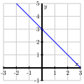
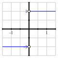
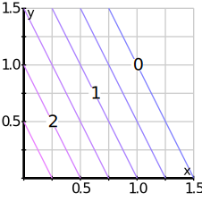
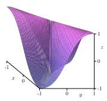
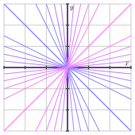
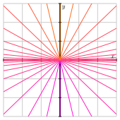

Section 10.1 Limits
Motivating Questions
What do we mean by the limit of a function \(f\) of two variables at a point \((a,b)\text{?}\)
What techniques can we use to show that a function of two variables does not have a limit at a point \((a,b)\text{?}\)
What does it mean for a function \(f\) of two variables to be continuous at a point \((a,b)\text{?}\)
In this section, we will study limits of functions of several variables, with a focus on limits of functions of two variables. In single variable calculus, we studied the notion of limit, which turned out to be a critical concept that formed the basis for the derivative and the definite integral. In this section we will begin to understand how the concept of limit for functions of two variables is similar to what we encountered for functions of a single variable. The limit will again be the fundamental idea in multivariable calculus, and we will use this notion of the limit of a function of several variables to define the important concept of differentiability later in this chapter. We have already seen its use in the derivatives of vector-valued functions in Section 9.7.
Let's begin by reviewing what we mean by the limit of a function of one variable. We say that a function \(f\) has a limit \(L\) as \(x\) approaches \(a\) provided that we can make the values \(f(x)\) as close to \(L\) as we like by taking \(x\) sufficiently close (but not equal) to \(a\text{.}\) We denote this behavior by writing
Preview Activity 10.1.1.
We investigate the limits of several different functions by working with tables and graphs.
-
Consider the function \(f\) defined by
\begin{equation*} f(x) = 3-x. \end{equation*}Complete Table 10.1.1.
What does the table suggest regarding \(\lim_{x\to 0}f(x)\text{?}\)Table 10.1.1. Values of \(f(x) = 3-x\text{.}\) \(x\) \(-0.2\) \(-0.1\) \(0.0\) \(0.1\) \(0.2\) \(f(x)\) Explain how your results in (a) are reflected in Figure 10.1.2.
Figure 10.1.2. The graph of \(f(x) = 3-x\text{.}\) -
Next, consider
\begin{equation*} g(x) = \frac{x}{|x|}. \end{equation*}Complete Table 10.1.3 with values near \(x = 0\text{,}\) the point at which \(g\) is not defined.
What does this suggest about \(\lim_{x\to 0}g(x)\text{?}\)Table 10.1.3. Values of \(g(x) = \frac{x}{|x|}\text{.}\) \(x\) \(-0.1\) \(-0.01\) \(-0.001\) \(0.001\) \(0.01\) \(0.1\) \(g(x)\) Explain how your results in (c) are reflected in Figure 10.1.4.
Figure 10.1.4. The graph of \(g(x) = \frac{x}{|x|}\text{.}\) -
Now, let's examine a function of two variables. Let
\begin{equation*} f(x,y) = 3 - x - 2y. \end{equation*}Complete Table 10.1.5.
What does the table suggest about \(\lim_{(x,y)\to(0,0)} f(x,y)\text{?}\)Table 10.1.5. Values of \(f(x,y) = 3 - x - 2y\text{.}\) \(x\backslash y\) \(-1.0\) \(-0.1\) \(0.0\) \(0.1\) \(1.0\) \(-1.0\) \(4.2\) \(-0.1\) \(1.1\) \(0.0\) \(2.8\) \(0.1\) \(4.9\) \(1.0\) \(2.0\) Explain how your results in (e) are reflected in Figure 10.1.6. Compare this limit to the limit in part (a). How are the limits similar and how are they different?
Figure 10.1.6. Left: The graph of \(f(x,y) = 3 - x - 2y\text{.}\) Right: A contour plot. -
Finally, consider
\begin{equation*} g(x,y) = \frac{2xy}{x^2+y^2}, \end{equation*}which is not defined at \((0,0)\text{.}\) Complete Table 10.1.7. Round to three decimal places.
What does this suggest about \(\lim_{(x,y)\to(0,0)} g(x,y)\text{?}\)Table 10.1.7. Values of \(g(x,y) = \frac{2xy}{x^2+y^2}\text{.}\) \(x\backslash y\) \(-1.0\) \(-0.1\) \(0.0\) \(0.1\) \(1.0\) \(-1.0\) \(0.198\) \(-0.1\) \(-0.198\) \(0.0\) — \(0.000\) \(0.1\) \(-0.198\) \(1.0\) \(0.000\) Explain how your results are reflected in Figure 10.1.8. Compare this limit to the limit in part (c). How are the results similar and how are they different?
Figure 10.1.8. Left: The graph of \(g(x,y) = \frac{2xy}{x^2+y^2}\text{.}\) Right: A contour plot.
Subsection 10.1.1 Limits of Functions of Two Variables
In Preview Activity 10.1.1, we recalled the notion of limit from single variable calculus and saw that a similar concept applies to functions of two variables. Though we will focus on functions of two variables, for the sake of discussion, all the ideas we establish here are valid for functions of any number of variables. In a natural followup to our work in Preview Activity 10.1.1, we now formally define what it means for a function of two variables to have a limit at a point.
Definition 10.1.9.
Given a function \(f = f(x,y)\text{,}\) we say that \(f\) has limit \(L\) as \((x,y)\) approaches \((a,b)\) provided that we can make \(f(x,y)\) as close to \(L\) as we like by taking \((x,y)\) sufficiently close (but not equal) to \((a,b)\text{.}\) We write
To investigate the limit of a single variable function, \(\lim_{x\to a}f(x)\text{,}\) we often consider the behavior of \(f\) as \(x\) approaches \(a\) from the right and from the left. Similarly, we may investigate limits of two-variable functions, \(\lim_{(x,y)\to(a,b)} f(x,y)\) by considering the behavior of \(f\) as \((x,y)\) approaches \((a,b)\) from various directions. This situation is more complicated because there are infinitely many ways in which \((x,y)\) may approach \((a,b)\text{.}\) In the next activity, we see how it is important to consider a variety of those paths in investigating whether or not a limit exists.
Activity 10.1.2.
Consider the function \(f\text{,}\) defined by
whose graph is shown below in Figure 10.1.10
Is \(f\) defined at the point \((0,0)\text{?}\) What, if anything, does this say about whether \(f\) has a limit at the point \((0,0)\text{?}\)
Values of \(f\) (to three decimal places) at several points close to \((0,0)\) are shown in Table 10.1.11.
Based on these calculations, state whether \(f\) has a limit at \((0,0)\) and give an argument supporting your statement. (Hint: The blank spaces in the table are there to help you see the patterns.)Table 10.1.11. Values of a function \(f\text{.}\) \(x\backslash y\) \(-1.000\) \(-0.100\) \(0.000\) \(0.100\) \(1.000\) \(-1.000\) \(-0.707\) — \(0.000\) — \(0.707\) \(-0.100\) — \(-0.707\) \(0.000\) \(0.707\) — \(0.000\) \(-1.000\) \(-1.000\) — \(1.000\) \(1.000\) \(0.100\) — \(-0.707\) \(0.000\) \(0.707\) — \(1.000\) \(-0.707\) — \(0.000\) — \(0.707\) Now we formalize the conjecture from the previous part by considering what happens if we restrict our attention to different paths. First, we look at \(f\) for points in the domain along the \(x\)-axis; that is, we consider what happens when \(y = 0\text{.}\) What is the behavior of \(f(x,0)\) as \(x \to 0\text{?}\) If we approach \((0,0)\) by moving along the \(x\)-axis, what value do we find as the limit?
What is the behavior of \(f\) along the line \(y=x\) when \(x \gt 0\text{;}\) that is, what is the value of \(f(x,x)\) when \(x>0\text{?}\) If we approach \((0,0)\) by moving along the line \(y=x\) in the first quadrant (thus considering \(f(x,x)\) as \(x \to 0^+\)), what value do we find as the limit?
In general, if \(\lim_{(x,y)\to(0,0)}f(x,y) = L\text{,}\) then \(f(x,y)\) approaches \(L\) as \((x,y)\) approaches \((0,0)\text{,}\) regardless of the path we take in letting \((x,y) \to (0,0)\text{.}\) Explain what the last two parts of this activity imply about the existence of \(\lim_{(x,y)\to(0,0)} f(x,y)\text{.}\)
Shown below in Figure 10.1.12 is a set of contour lines of the function \(f\text{.}\) What is the behavior of \(f(x,y)\) as \((x,y)\) approaches \((0,0)\) along any straight line? How does this observation reinforce your conclusion about the existence of \(\lim_{(x,y)\to(0,0)}f(x,y)\) from the previous part of this activity? (Hint: Use the fact that a non-vertical line has equation \(y=mx\) for some constant \(m\text{.}\))
Figure 10.1.12. Contour lines of \(f(x,y) = \frac{y}{\sqrt{x^2+y^2}}\text{.}\)
As we have seen in Activity 10.1.2, if \((x,y)\) approaches \((a,b)\) along two different paths and we find that \(f(x,y)\) has two different limits, we can conclude that \(\lim_{(x,y)\to(a,b)}f(x,y)\) does not exist. This is similar to the one-variable example \(g(x)=x/|x|\) as shown in Figure 10.1.13; \(\lim_{x\to0}g(x)\) does not exist because we see different limits as \(x\) approaches 0 from the left and the right.
As a general rule, we have
Limits along different paths.
If \(f(x,y)\) has two different limits as \((x,y)\) approaches \((a,b)\) along two different paths, then \(\lim_{(x,y)\to(a,b)}f(x,y)\) does not exist.
As the next activity shows, studying the limit of a two-variable function \(f\) by considering the behavior of \(f\) along various paths can require subtle insights.
Activity 10.1.3.
Let's consider the function \(g\) defined by
and investigate the limit \(\lim_{(x,y)\to(0,0)}g(x,y)\text{.}\)
What is the behavior of \(g\) on the \(x\)-axis? That is, what is \(g(x,0)\) and what is the limit of \(g\) as \((x,y)\) approaches \((0,0)\) along the \(x\)-axis?
What is the behavior of \(g\) on the \(y\)-axis? That is, what is \(g(0,y)\) and what is the limit of \(g\) as \((x,y)\) approaches \((0,0)\) along the \(y\)-axis?
What is the behavior of \(g\) on the line \(y=mx\text{?}\) That is, what is \(g(x,mx)\) and what is the limit of \(g\) as \((x,y)\) approaches \((0,0)\) along the line \(y=mx\text{?}\)
Based on what you have seen so far, do you think \(\lim_{(x,y)\to(0,0)}g(x,y)\) exists? If so, what do you think its value is?
Now consider the behavior of \(g\) on the parabola \(y=x^2\text{?}\) What is \(g(x,x^2)\) and what is the limit of \(g\) as \((x,y)\) approaches \((0,0)\) along this parabola?
State whether the limit \(\lim_{(x,y)\to(0,0)} g(x,y)\) exists or not and provide a justification of your statement.
This activity shows that we need to be careful when studying the limit of a two-variable functions by considering its behavior along different paths. If we find two different paths that result in two different limits, then we may conclude that the limit does not exist. However, we can never conclude that the limit of a function exists only by considering its behavior along different paths.
Generally speaking, concluding that a limit \(\lim_{(x,y)\to(a,b)}f(x,y)\) exists requires a more careful argument.
Example 10.1.14.
Consider the function \(f\) defined by
We want to know whether \(\lim_{(x,y)\to(0,0)}f(x,y)\) exists.
Note that if either \(x\) or \(y\) is 0, then \(f(x,y) = 0\text{.}\) Therefore, if \(f\) has a limit at \((0,0)\text{,}\) it must be 0. We will therefore argue that
by showing that we can make \(f(x,y)\) as close to \(0\) as we wish by taking \((x,y)\) sufficiently close (but not equal) to \((0,0)\text{.}\) In what follows, we view \(x\) and \(y\) as being real numbers that are close, but not equal, to 0.
Since \(0 \leq x^2\text{,}\) we have
which implies that
Multiplying both sides by \(x^2\) and observing that \(f(x,y) \ge 0\) for all \((x,y)\) gives
Thus, \(0 \leq f(x,y) \leq x^2\text{.}\) Since \(x^2 \to 0\) as \(x \to 0\text{,}\) we can make \(f(x,y)\) as close to \(0\) as we like by taking \(x\) sufficiently close to \(0\) (for this example, it turns out that we don't even need to worry about making \(y\) close to 0). Therefore,
In spite of the fact that these two most recent examples illustrate some of the complications that arise when studying limits of two-variable functions, many of the properties that are familiar from our study of single variable functions hold in precisely the same way.
Properties of Limits.
Let \(f=f(x,y)\) and \(g=g(x,y)\) be functions so that \(\lim_{(x,y) \to (a,b)} f(x,y)\) and \(\lim_{(x,y) \to (a,b)} g(x,y)\) both exist. Then
\(\displaystyle \lim_{(x,y)\to(a,b)} x = a\) and \(\displaystyle \lim_{(x,y)\to(a,b)} y = b\)
\(\displaystyle \lim_{(x,y) \to (a,b)} cf(x,y) = c\left(\lim_{(x,y) \to (a,b)} f(x,y)\right)\) for any scalar \(c\)
\(\displaystyle \displaystyle \lim_{(x,y) \to (a,b)} [f(x,y) \pm g(x,y)] = \lim_{(x,y) \to (a,b)} f(x,y) \pm \lim_{(x,y) \to (a,b)} g(x,y) \)
\(\displaystyle \displaystyle \lim_{(x,y) \to (a,b)} [f(x,y) g(x,y)] = \left(\lim_{(x,y) \to (a,b)} f(x,y)\right) \left( \lim_{(x,y) \to (a,b)} g(x,y)\right) \)
\(\displaystyle \lim_{(x,y) \to (a,b)} \frac{f(x,y)}{g(x,y)} = \frac{\displaystyle \lim_{(x,y) \to (a,b)} f(x,y)}{\displaystyle \lim_{(x,y) \to (a,b)} g(x,y)}\) if \(\displaystyle \lim_{(x,y) \to (a,b)} g(x,y) \neq 0\text{.}\)
We can use these properties and results from single variable calculus to verify that many limits exist. For example, these properties show that the function \(f\) defined by
has a limit at every point \((a,b)\) and, moreover,
The reason for this is that polynomial functions of a single variable have limits at every point.
Subsection 10.1.2 Continuity
Recall that a function \(f\) of a single variable \(x\) is said to be continuous at \(x=a\) provided that the following three conditions are satisfied:
\(f(a)\) exists,
\(\lim_{x\to a}f(x)\) exists, and
\(\lim_{x\to a}f(x)=f(a)\text{.}\)
Using our understanding of limits of multivariable functions, we can define continuity in the same way.
Definition 10.1.15.
A function \(f=f(x,y)\) is continuous at the point \((a, b)\) provided that
\(f\) is defined at the point \((a, b)\text{,}\)
\(\lim_{(x,y) \to (a,b)} f(x,y)\) exists, and
\(\lim_{(x,y) \to (a,b)} f(x,y) = f(a,b)\text{.}\)
For instance, we have seen that the function \(f\) defined by \(f(x,y) = 3x^2y^3 + 2xy^2 - 3x + 1\) is continous at every point. And just as with single variable functions, continuity has certain properties that are based on the properties of limits.
Properties of continuity.
Let \(f\) and \(g\) be functions of two variables that are continuous at the point \((a,b)\text{.}\) Then
\(cf\) is continuous at \((a,b)\) for any scalar \(c\)
\(f+g\) is continuous at \((a,b)\)
\(f-g\) is continuous at \((a,b)\)
\(fg\) is continuous at \((a,b)\)
\(\frac{f}{g}\) is continuous at \((a,b)\) if \(g(a,b) \neq 0\)
Using these properties, we can apply results from single variable calculus to decide about continuity of multivariable functions. For example, the coordinate functions \(f\) and \(g\) defined by \(f(x,y) = x\) and \(g(x,y) = y\) are continuous at every point. We can then use properties of continuity listed to conclude that every polynomial function in \(x\) and \(y\) is continuous at every point. For example, \(g(x,y)=x^2\) and \(h(x,y)=y^3\) are continuous functions, so their product \(f(x,y) = x^2y^3\) is a continuous multivariable function.
Subsection 10.1.3 Summary
A function \(f = f(x,y)\) has a limit \(L\) at a point \((a,b)\) provided that we can make \(f(x,y)\) as close to \(L\) as we like by taking \((x,y)\) sufficiently close (but not equal) to \((a,b)\text{.}\)
If \((x,y)\) has two different limits as \((x,y)\) approaches \((a,b)\) along two different paths, we can conclude that \(\lim_{(x,y)\to(a,b)}f(x,y)\) does not exist.
Properties similar to those for one-variable functions allow us to conclude that many limits exist and to evaluate them.
-
A function \(f = f(x,y)\) is continuous at a point \((a,b)\) in its domain if \(f\) has a limit at \((a,b)\) and
\begin{equation*} f(a,b) = \lim_{(x,y) \to (a,b)} f(x,y). \end{equation*}
Exercises 10.1.4 Exercises
1.
Find the limits, if they exist, or type DNE for any which do not exist.
1) Along the \(x\)-axis:
2) Along the \(y\)-axis:
3) Along the line \(y=mx\) :
4) The limit is:
2. Determining the limit of a funtion.
In this problem we show that the function
does not have a limit as \((x,y)\to (0,0)\text{.}\)
(a) Suppose that we consider \((x,y)\to (0,0)\) along the curve \(y = 4 x^{1/2}\text{.}\) Find the limit in this case:
\(\lim\limits_{(x,4 x^{1/2})\to(0,0)} \frac{2x-y^{2}}{x+y^{2}} =\)
(b) Now consider \((x,y)\to (0,0)\) along the curve \(y = 5 x^{1/2}\text{.}\) Find the limit in this case:
\(\lim\limits_{(x,5 x^{1/2})\to(0,0)} \frac{2x-y^{2}}{x+y^{2}} =\)
(c) Note that the results from (a) and (b) indicate that \(f\) has no limit as \((x,y)\to (0,0)\) (be sure you can explain why!).
To show this more generally, consider \((x,y)\to (0,0)\) along the curve \(y = m x^{1/2}\text{,}\) for arbitrary \(m\text{.}\) Find the limit in this case:
\(\lim\limits_{(x,m x^{1/2})\to(0,0)} \frac{2x-y^{2}}{x+y^{2}} =\)
(Be sure that you can explain how this result also indicates that \(f\) has no limit as \((x,y)\to(0,0)\text{.}\)
3.
Show that the function
does not have a limit at \((0,0)\) by examining the following limits.
(a) Find the limit of \(f\) as \((x,y) \to (0,0)\) along the line \(y = x\text{.}\)
\(\lim\limits_{{}^{(x,y)\to(0,0)}_{y=x}} f(x,y) =\)
(b) Find the limit of \(f\) as \((x,y)\to(0,0)\) along the curve \(y = x^4\text{.}\)
\(\lim\limits_{{}^{(x,y)\to(0,0)}_{y=x^4}} f(x,y) =\)
(Be sure that you are able to explain why the results in (a) and (b) indicate that \(f\) does not have a limit at (0,0)!
4.
Find the limit, if it exists, or type N if it does not exist.
\(\displaystyle \lim_{(x, y) \rightarrow (0, 0)} \frac{4 x^2}{ 4 x^2 + 4 y^2} =\)
5.
Find the limit, if it exists, or type N if it does not exist.
\(\displaystyle \lim_{(x, y) \rightarrow (0, 0)} \frac{(x + 19y)^2}{x^2 + {19}^2y^2} =\)
6.
Find the limit, if it exists, or type 'DNE' if it does not exist.
\(\displaystyle \lim_{(x, y) \rightarrow (4, -5)} e^{\sqrt{4x^2 + 1y^2}} =\)
7.
Find the limit, if it exists, or type N if it does not exist.
\(\displaystyle \lim_{(x, y, z) \rightarrow (0, 0, 0)} \frac{5 xy+ 4 yz+ xz }{25 x^2+ 16 y^2+ z^2} =\)
8.
Find the limit, if it exists, or type N if it does not exist.
\(\displaystyle \lim_{(x, y, z) \rightarrow (1, 2, 3)} \frac{3 z e^{x^2+y^2}}{x^2+ 2 y^2+ 3 z^2} =\)
9.
Find the limit (enter 'DNE' if the limit does not exist)
Hint: rationalize the denominator.
10.
The largest set on which the function \(f(x,y) = 1/(7 - x^2 - y^2)\) is continuous is
The exterior of the circle \(x^2 + y^2 = 7\)
All of the xy-plane
The interior of the circle \(x^2 + y^2 = 7\text{,}\) plus the circle
The interior of the circle \(x^2 + y^2 = 7\)
All of the xy-plane except the circle \(x^2 + y^2 = 7\)
11.
Consider the function \(f\) defined by \(f(x,y) = \frac{xy}{x^2 + y^2 + 1}.\)
What is the domain of \(f\text{?}\)
Evaluate limit of \(f\) at \((0,0)\) along the following paths: \(x = 0\text{,}\) \(y = 0\text{,}\) \(y = x\text{,}\) and \(y = x^2\text{.}\)
What do you conjecture is the value of \(\lim_{(x,y) \to (0,0)} f(x,y)\text{?}\)
Is \(f\) continuous at \((0,0)\text{?}\) Why or why not?
Use appropriate technology to sketch both surface and contour plots of \(f\) near \((0,0)\text{.}\) Write several sentences to say how your plots affirm your findings in (a) - (d).
12.
Consider the function \(g\) defined by \(g(x,y) = \frac{xy}{x^2 + y^2}.\)
What is the domain of \(g\text{?}\)
Evaluate limit of \(g\) at \((0,0)\) along the following paths: \(x = 0\text{,}\) \(y = x\text{,}\) and \(y = 2x\text{.}\)
What can you now say about the value of \(\lim_{(x,y) \to (0,0)} g(x,y)\text{?}\)
Is \(g\) continuous at \((0,0)\text{?}\) Why or why not?
Use appropriate technology to sketch both surface and contour plots of \(g\) near \((0,0)\text{.}\) Write several sentences to say how your plots affirm your findings in (a) - (d).
13.
Consider the function \(h\) defined by \(h(x,y) = \frac{2x^2y}{x^4 + y^2}.\)
What is the domain of \(h\text{?}\)
Evaluate the limit of \(h\) at \((0,0)\) along all linear paths the contain the origin. What does this tell us about \(\lim_{(x,y) \to (0,0)} h(x,y)\text{?}\) (Hint: A non-vertical line throught the origin has the form \(y = mx \) for some constant \(m\text{.}\))
Does \(\lim_{(x,y) \to (0,0)} h(x,y)\) exist? Verify your answer. Check by using appropriate technology to sketch both surface and contour plots of \(h\) near \((0,0)\text{.}\) Write several sentences to say how your plots affirm your findings about \(\lim_{(x,y) \to (0,0)} h(x,y)\text{.}\)
14.
For each of the following prompts, provide an example of a function of two variables with the desired properties (with justification), or explain why such a function does not exist.
A function \(p\) that is defined at \((0,0)\text{,}\) but \(\lim_{(x,y) \to (0,0)} p(x,y)\) does not exist.
A function \(q\) that does not have a limit at \((0,0)\text{,}\) but that has the same limiting value along any line \(y = mx\) as \(x \to 0\text{.}\)
A function \(r\) that is continuous at \((0,0)\text{,}\) but \(\lim_{(x,y) \to (0,0)} r(x,y)\) does not exist.
-
A function \(s\) such that
\begin{equation*} \lim_{(x,x) \to (0,0)} s(x,x) = 3 \ \ \ \mbox{and} \ \ \ \lim_{(x,2x) \to (0,0)} s(x,2x) = 6, \end{equation*}for which \(\lim_{(x,y) \to (0,0)} s(x,y)\) exists.
A function \(t\) that is not defined at \((1,1)\) but \(\lim_{(x,y) \to (1,1)} t(x,y)\) does exist.
15.
Use the properties of continuity to determine the set of points at which each of the following functions is continuous. Justify your answers.
The function \(f\) defined by \(f(x,y) = \frac{x+2y}{x-y}\)
The function \(g\) defined by \(g(x,y) = \frac{\sin(x)}{1+e^y}\)
-
The function \(h\) defined by
\begin{equation*} h(x,y) = \begin{cases} \frac{xy}{x^2+y^2} \amp \text{ if } (x,y) \neq (0,0) \\ 0 \amp \text{ if } (x,y) = (0,0) \end{cases} \end{equation*} -
The function \(k\) defined by
\begin{equation*} k(x,y) = \begin{cases} \frac{x^2y^4}{x^2+y^2} \amp \text{ if } (x,y) \neq (0,0) \\ 0 \amp \text{ if } (x,y) = (0,0) \end{cases} \end{equation*}